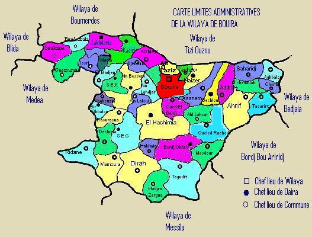

مباشرة بعد توظيفي ( مع تقريبا كل موظفي المديرية) نهاية سنة 2005 اطلقت الوزارة الوصية مشروع الخطة الرئيسية" le schéma directeur"
وكان من مهامنا هو التنقل إلى كل بلديات ولاياتنا و إحصاء المعلومات و البيانات الخاصة بقطاعنا، بعد استكمال الخرجات الميدانية طلب منَا المدير إعداد تقرير يحوي نظرة شاملة عن الولاية و مختلف بلدياتها خصوصا ما يتعلق بقطاع البريد و المواصلات
من هنا تبلورت لدي فكرة إنشاء موقع خاص بالمديرية يعطي نظرة شاملة عنها ،
باشرت تعلم لغة html و CSS دون مماطلة، بعد ايام شرعت في إنشاء الموقع،
تزامناً مع خرجاتنا الميدانية كنا نطلب خرائط ورقية من مصالح البلديات التي زرناها، أردت دمج الخرائط في الموقع ﻹعطاءه زخما بصريا
بعد البحث إكتشفت أنَ لغة html توفر أداة ماب تمكنك من جعل صورة الخريطة أكثر حيوية
كانت تلك هي بداية الحكاية
